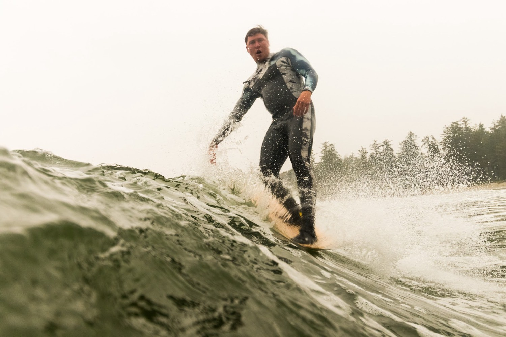

Founder and CEO
Darren Lundquist
For more than 22 years, surfing has been the constant in Darren Lundquist’s life. Through every high and low, the ocean is where he returns and where his creativity comes alive. He spent many years as a competitive surfer, a run highlighted by winning the 2015 Canadian National Amateur Championship. After more than a decade living in Tofino, B.C., surfing isn’t just something Darren does. It’s the lens through which he sees the world.
That creative drive has taken many forms. Darren spent years teaching surf lessons and working in restaurants before finding his craft in barbering. It became both an art form and a way to connect with people from every walk of life. He went on to open Rising Tide Barbershop in Parksville, B.C.
Behind the chair, Darren saw a gap. The booking apps barbers rely on treat clients as appointments, not relationships. So he set out to build something better: Barber Helm, a relationship-first platform for barbers, now nearing release.
Darren founded Shattered Coast Interactive as the home for both Barber Helm and his debut video game, Shattered Coast. The game quickly became his main pursuit. Shattered Coast brings the real West Coast surf experience into an open world, built by someone who has spent his life, and his competitive career, in those waves.
As the company grew, Darren brought on his best friend, Keenan Bush of Tofino Surf Photography, as artistic advisor and investor relations liaison. Years of friendship, world travel, and a shared love of surfing and art have always kept them close. Now they’re channeling that bond into something new: bringing the soul of the coast into the digital world.